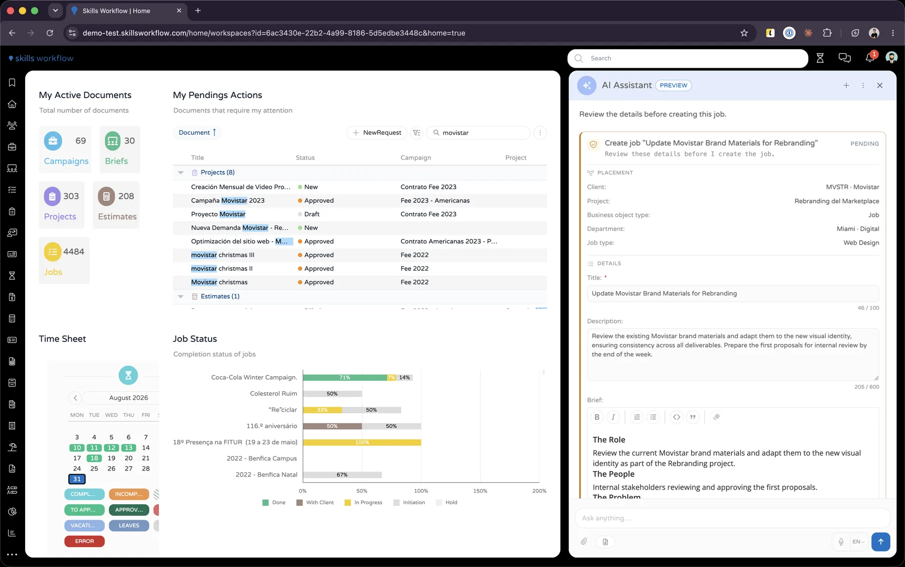

Skills Workflow · AI for agencies · In preview
Skills Workflow AI
I lead the integration of AI into Skills Workflow, the platform agencies run their work on. It's an assistant that sits beside every screen: it reads what you're working on, answers from your own data and does the work, from creating a job out of a client email to changing a workflow.
Four agents ship with it, each with its own tools, and nothing is written without the user approving it. Agencies extend it with their own skills, agents and MCP servers, and can build on Skills Workflow from Claude, Codex or GitHub Copilot.

How a request becomes a change
- AskIn plain language, in a panel beside the screen you're on.
- ContextIt reads only what you allow: the document, the workspace, your memories.
- AgentDocument, Workflow, Workspace or Writing, or one the agency built.
- ToolsEach agent has an allow-list. Tools run as the signed-in user.
- ApproveAnything that writes raises an approval card you can edit or deny.
- RememberPreferences carry into the next conversation, and stay yours.